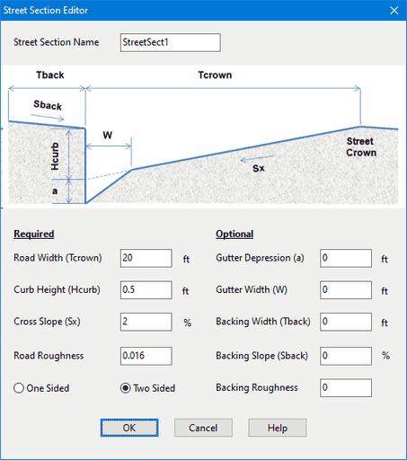

We next specify the cross-section shape and roughness of our street conduits. SWMM includes a special Street cross-section object that is consistent with the shape used by the HEC-22 inlet procedures. Similar to the way that Transects are used with irregular channels, a collection of Street cross-sections can be created to be re-used across multiple streets.
Our example project utilizes the same cross-section for all of its streets. To create it:
| 1. | Select the Streets category from the Project Browser. |
| 2. | Click the |
| 3. | Enter the ID name and dimensions shown in the screen shot below. |

These dimensions refer to one half of the street, from its crown to its curb (or backing if present). Because our streets are two-sided, the same dimensions apply to both halves.